Media & Stories
Videos, interviews, newsletters, magazines, presentations, photographs and press coverage from more than 50 years of Green2Gold.
Videos
If you are serious about commercializing your inventions or business concepts, do yourself a favor and study these videos. It will save you a lot of time and money.
About Green2Gold
Learn about Green2Gold's History, Vision, Resources, Inventors & Entrepreneurs, as well as Green2Gold's Mission to help bring Inventors & Entrepreneurs Out of the Closet and into the Star Position.
Before The Sharks Take The Heart Out Of Your Inventions & Creations….
Green2Gold Has a Heart and we are going to be adding even more love to your precious inventions.
Episode 1: Information Seeking
Crippling Mistakes & Dangerous Pitfalls Inventors & Entrepreneurs Often Face on the way to the Marketplace. These pitfall issues are not listed in their overall importance because that would be dependent on your particular need.
Episode 2: Hiring Coaches & Experienced Mentors
If your trying to get a bit more specific information hiring a Business Coach or Mentor to work with you Individually is a little more helpful and a little more of an efficient process. But we've found, and its backed by years of statistics, those mentors and coaches for the most part, basically leave you in the lurch.
Watch on the Green2Gold YouTube channelGreen2Gold video playlist
Learn more about Green2Gold, its philosophies, inventor & entrepreneur stories, and resources.
Episode 3: Paying For Inventor And Entrepreneur Services
This approach is in fact more about results, but its important to understand, that taking your ideas to any for profit company for invention or entrepreneurial services of any kind, is taking it to an old structure.
Episode 4: Money
Another major pitfall is a misconception that if you had enough money you could make it successful. And that's not necessarily true, no more then Frank Sinatra could make his son anywhere near as successful as he was, no matter how much money he had.
Has The World Misunderstood Investing? I Know The USA Has.
Let's Tell It Like It Is.
Plastic-Free Packaging Alliance
Alan discusses the Plastic-Free Packaging Alliance, a non-profit organization helping major companies transition from harmful oil-based plastics to environmentally friendly bio-plastics. To date the organization has prevented millions of tons of plastic from entering landfills and oceans.
How to Fund Your Inventions or Business Concepts.
Green2Gold is a non profit organization that has been helping inventors and entrepreneurs develop their inventions and business concepts for over 45 years. In this video he shares a wealth of knowledge about raising capital and investing in your ideas in a multitude of ways.
Regenerative Media TV
From Green2Gold's Regenerative Media initiative.
EPX Interview | Professor Alan Tratner & Earth Day.
"This past Earth Day, I had a chance to interview fellow EPX member, Earth Day Pioneer and business partner in D1Labs (impact accelerator), Professor Alan Tratner, on the beginnings of what has become one of the most powerful movements in human history."
Green2Gold on YouTubeNewsletters
Green2Gold Nuggets, Regeneration World Magazine and Regeneration Global Magazine.
Winter/Spring 2025 Issue
Read (PDF)Fall 2024 Issue
Read (PDF)Fall/Winter 2023 Issue
Read (PDF)Summer 2023 Issue
Read (PDF)Spring 2023 Issue
Read (PDF)Winter 2022 Issue
Read (PDF)Summer 2021 Issue
Read (PDF)Harm-Free Emporium
The Harm-Free Emporium 2024/2025 update, featured in Regeneration World Magazine (Fall 2024).
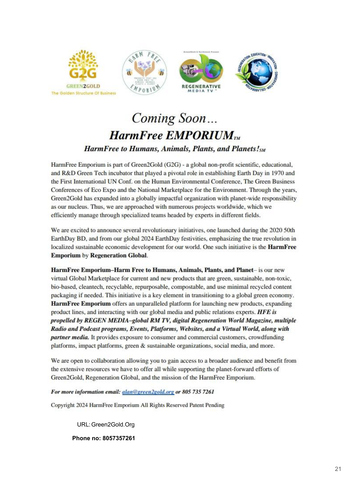
Historical archives & presentations

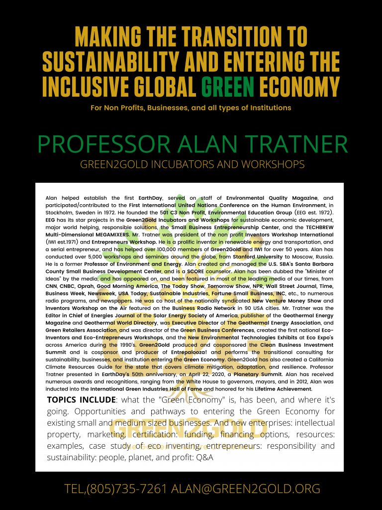

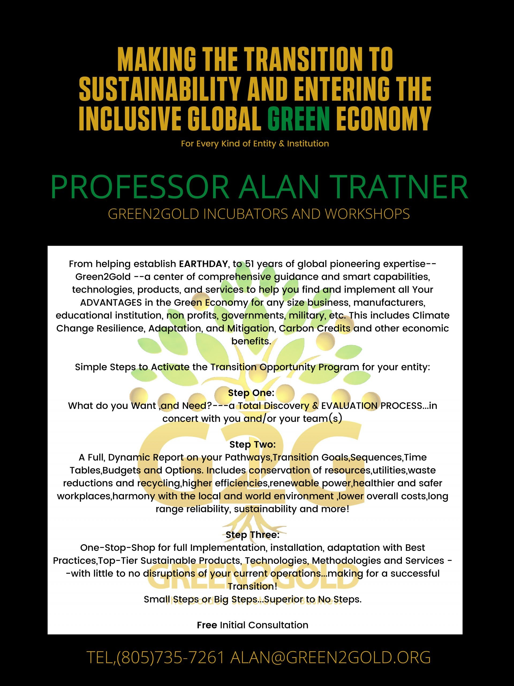

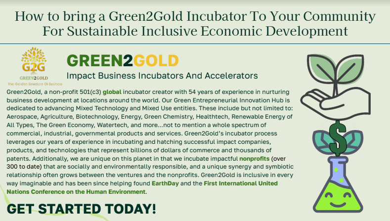

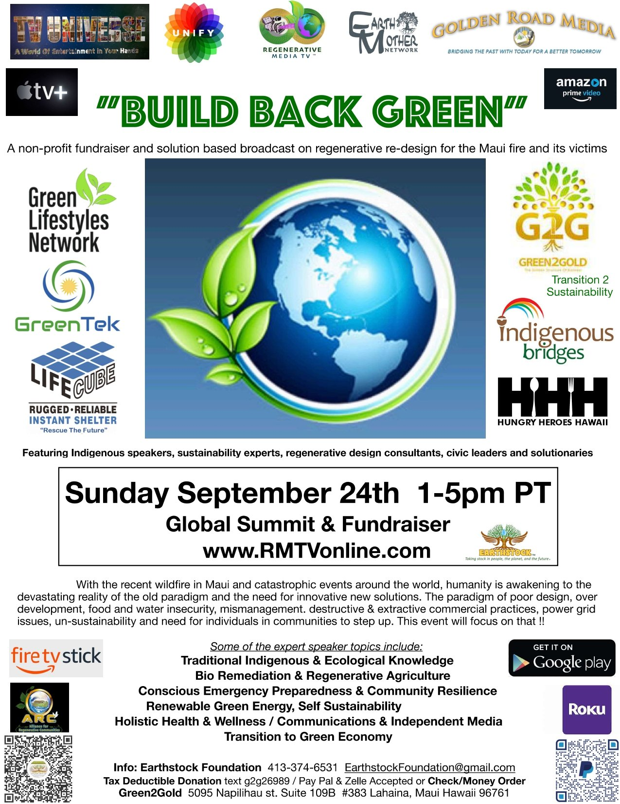

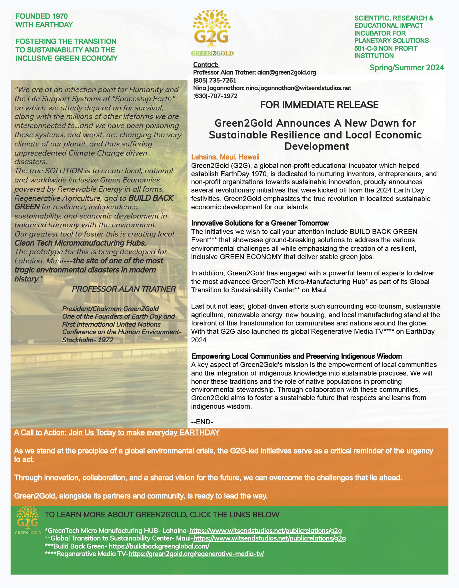

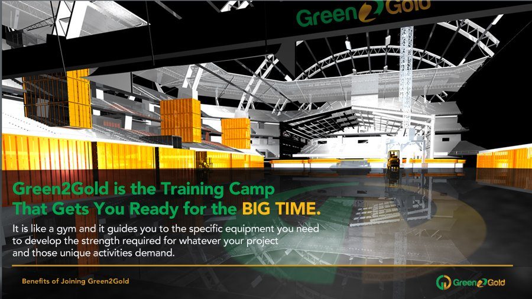

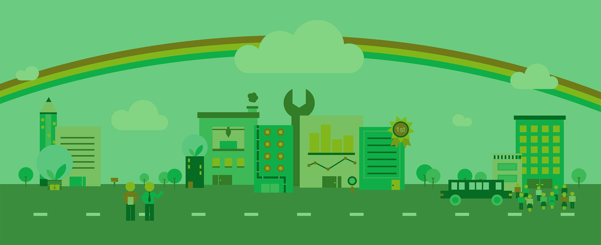

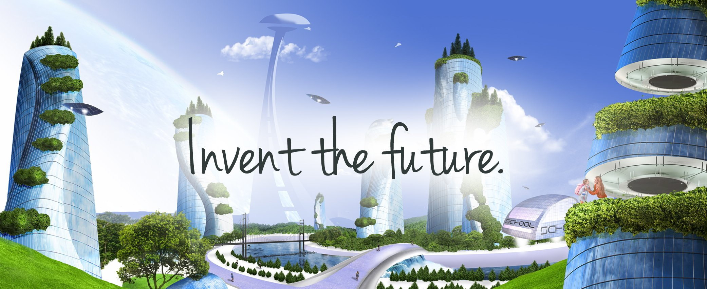

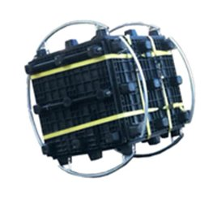

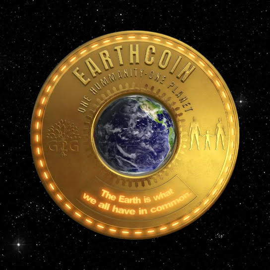
Incubator Presentation
View presentation (PDF)RMTV media kit
View kit (PDF)Success stories & testimonials
Read →As seen in
Prof. Alan Tratner has been dubbed the "Minister of Ideas" by the media and has been featured in the Wall Street Journal, Inc., Entrepreneur, Business Week, TIME, USA Today, America Online Forum, NPR, and has appeared on OPRAH, CNN, Good Morning America, and CNBC. He co-hosted the nationally syndicated New Venture Money Show and Inventors Workshop on the Air on the Business Radio Network in 90 USA cities.
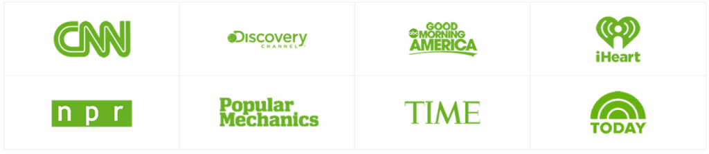
"Alan Tratner and Green2Gold fight global warming through private enterprise…he urges one and all to step right up to the greatest show on earth: human ingenuity put to the task of saving the world…"